Zarif Haikal|
AI / software engineer at GenSE. Artificial Intelligence graduate from Universiti Teknologi MARA (UiTM), focused on machine learning, computer vision, and full-stack delivery of real-world products.
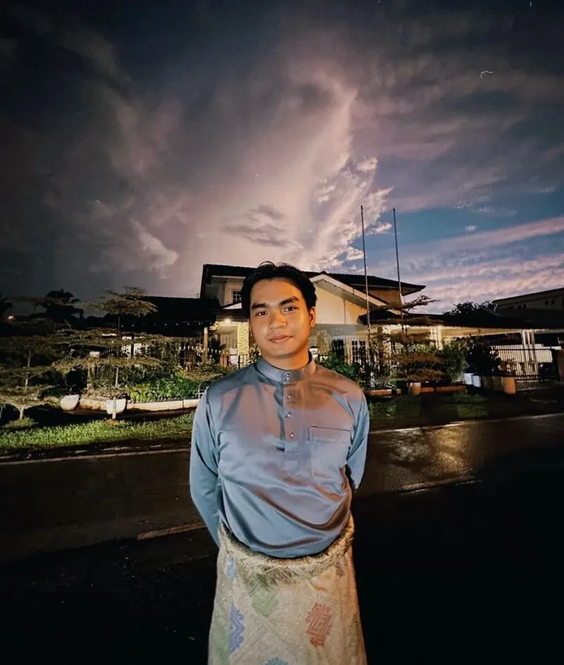
Skills & Technologies
Projects Completed
Certifications
Years Experience
Technologies Mastered
Featured Projects
iDialysis - PD Patient Management System
A digital healthcare platform for Peritoneal Dialysis (PD) patient reporting with AI-powered weekly assessments. The system automates patient monitoring and provides doctors with timely updates and insights for better patient care.
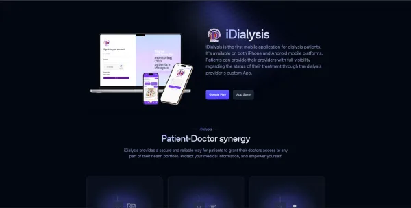
SDIP — Sistem Digital Inspektorat dan Perundangan
An integrated digital platform for the Unit of Inspectorate and Legislation, Ministry of Health Malaysia (KKM), supporting enforcement operations: audits, investigations, inspections, and notice lifecycle management—with modern workflows, transparency, and alignment with national digital health transformation.
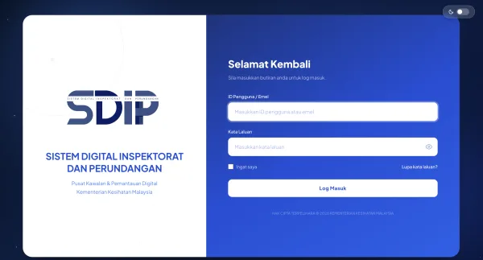
Multi-LLM Chat Application
A modern AI chat application that compares responses from 5 different AI models simultaneously using the OpenRouter API. Features intelligent judging system that evaluates and selects the best response, with support for images and file uploads.
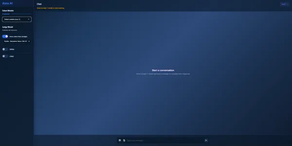
LLM Fine-Tuning & Model Deployment
Specialized in fine-tuning large language models using Unsloth for efficient training, converting models to GGUF format, and deploying them locally via Ollama. Published multiple custom models on Hugging Face including the AuraAI series.
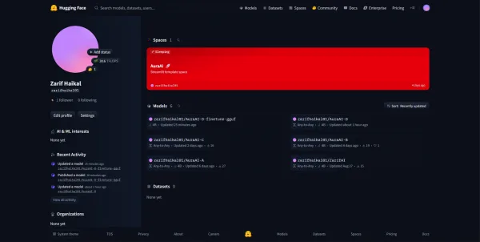
Real-Time Sign Language Translator
A real-time sign language translator using YOLOv8 for gesture detection via webcam. Features custom-trained models, manual data collection, and Roboflow for dataset processing and augmentation. Built with OpenCV and PyTorch.
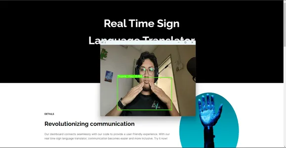
Hospital Database Management System
A comprehensive database management system for hospitals, built with Oracle, ensuring efficient patient records management and streamlined healthcare operations.
Google Maps Data Scraper
A JavaScript-based web scraping tool for extracting business data from Google Maps. Built for market research and data collection purposes with efficient automation capabilities.
Telegram Data Scraper
A Python-based automation tool for scraping data from Telegram. Utilizes API integration and web automation for efficient data collection and analysis.
PDF Processor
A Python application for processing and manipulating PDF files. Features include text extraction, page manipulation, merging, and automated processing for document workflow management.
Ditosis — Synthetic Data Solutions
A modern, dark-themed marketing site for Ditosis, positioned around high-quality synthetic datasets for AI training and fine-tuning. Includes responsive layout, scroll-driven motion, and a structured narrative across services, platform highlights, and lead capture. Live at ditosis.gense.my.
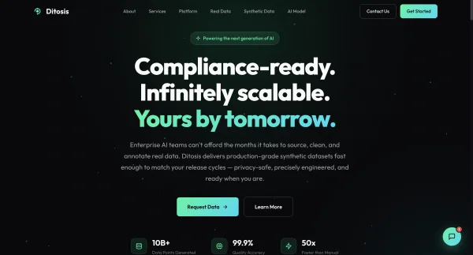
Education
Bachelor's Degree, Artificial Intelligence
Universiti Teknologi MARA (UiTM)
Mar 2022 - Jun 2024
CGPA: 3.29
- Dean's List Recipient
- Specialized in Machine Learning and Computer Vision
- Final Year Project: Real-Time Sign Language Translation using YOLOv8
Diploma of Education, Computer Science
Universiti Teknologi MARA (UiTM)
Jul 2019 - Feb 2022
CGPA: 3.73
- Vice Chancellor's Award
- Strong foundation in programming and web development
- Proficient in HTML5, CSS, and various programming languages
Work Experience
AI / Software Engineer
GenSE Sdn BhdOct 2025 - Present (Contract - Hybrid)
- Develop AI solutions and software engineering projects
- Work with cross-functional teams on innovative technology solutions
- Apply AI and machine learning techniques in real-world applications
K-Youth Graduate Program
GenSE Sdn BhdMay 2025 - Oct 2025 (5 mos - Cyberjaya)
- Completed intensive graduate program in AI and technology development
- Gained hands-on experience in artificial intelligence and web technologies
- Developed skills in HTML5, CSS, and modern web development practices
Information Technology Consultant
AimstralMar 2024 - Jun 2024 (3 mos - Kuching, Sarawak)
- Provided technical support and IT consulting services
- Developed web applications using PHP and modern web technologies
- Assisted clients with technology solutions and troubleshooting
Web Developer (Internship)
ProsignalSep 2021 - Feb 2022 (5 mos - Subang Bestari)
- Developed and maintained web applications
- Worked with network-attached storage (NAS) systems
- Contributed to various web development projects
Outdoor Adventures
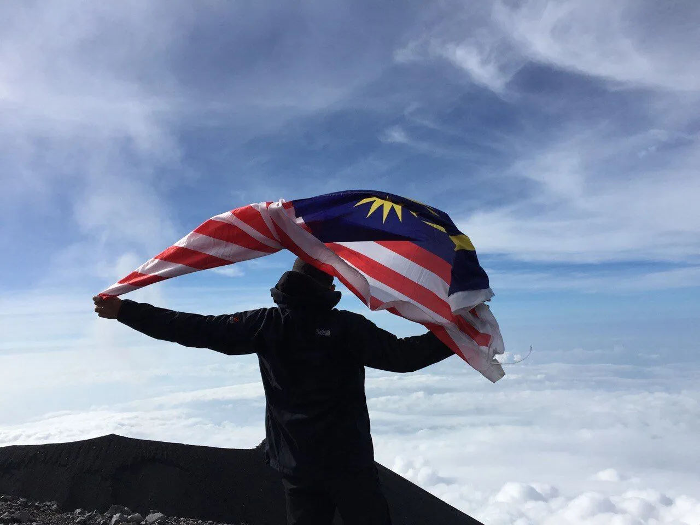
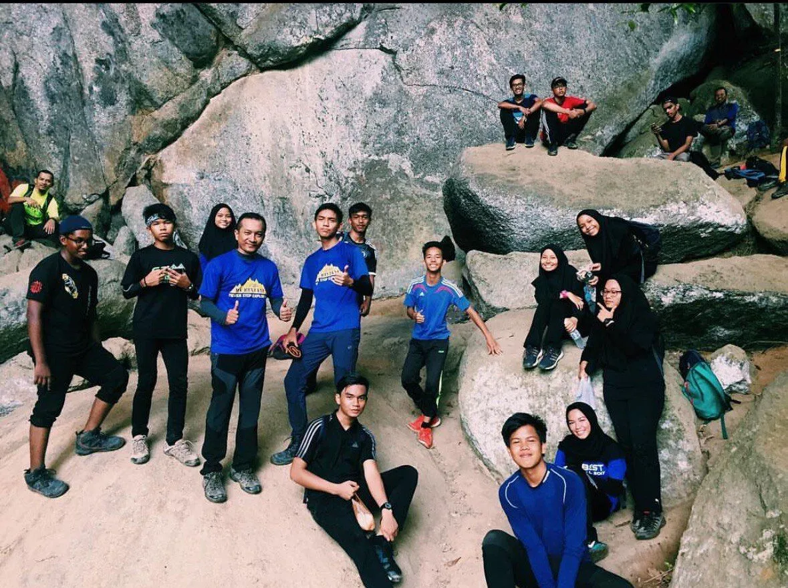
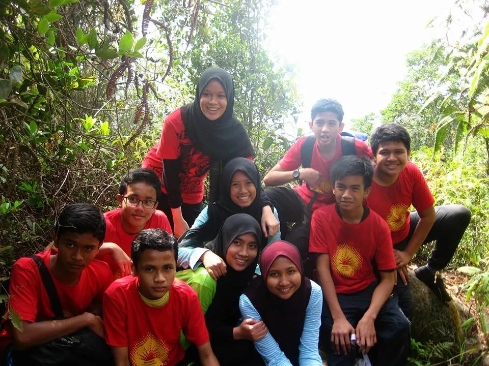
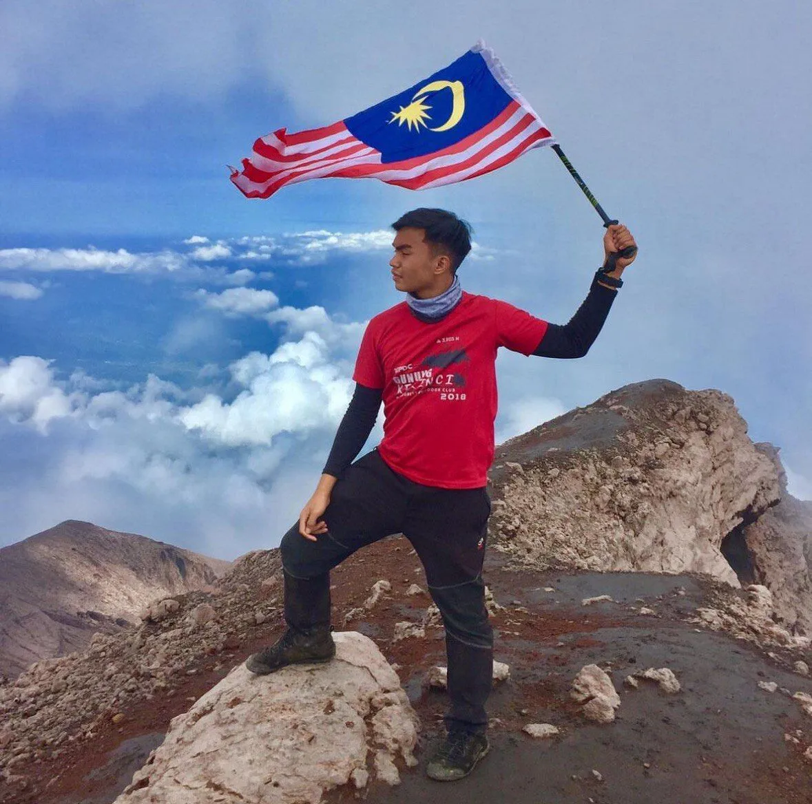
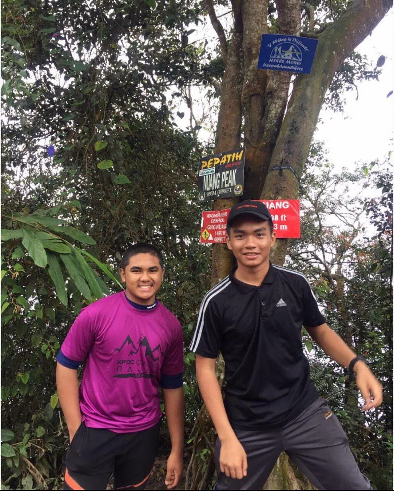
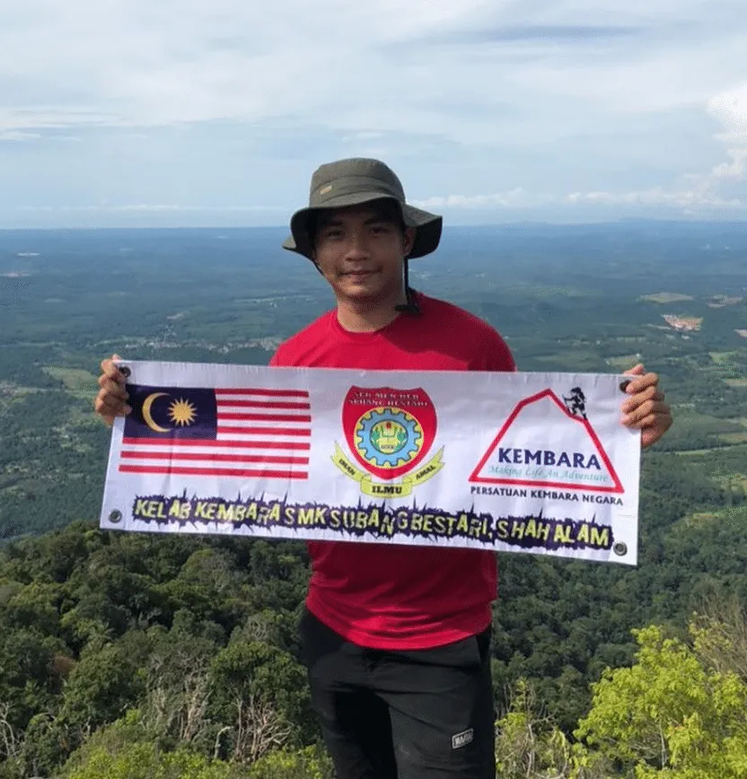
Photography
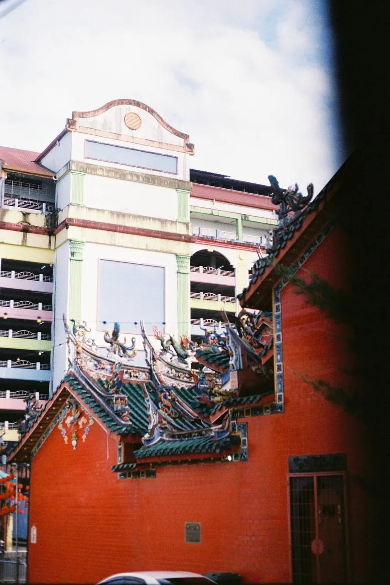
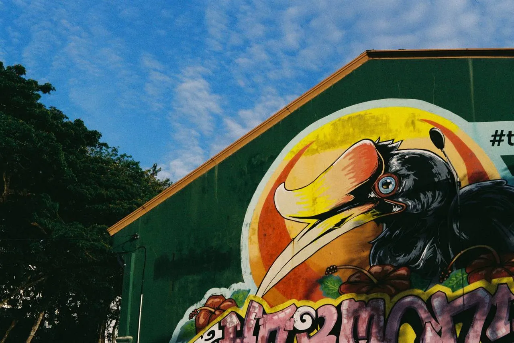
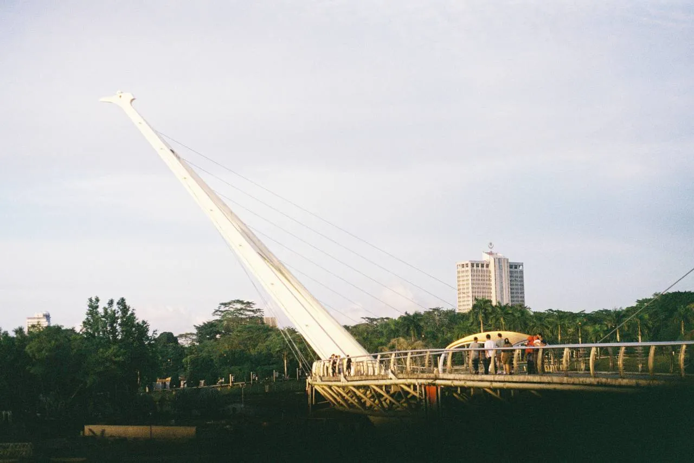
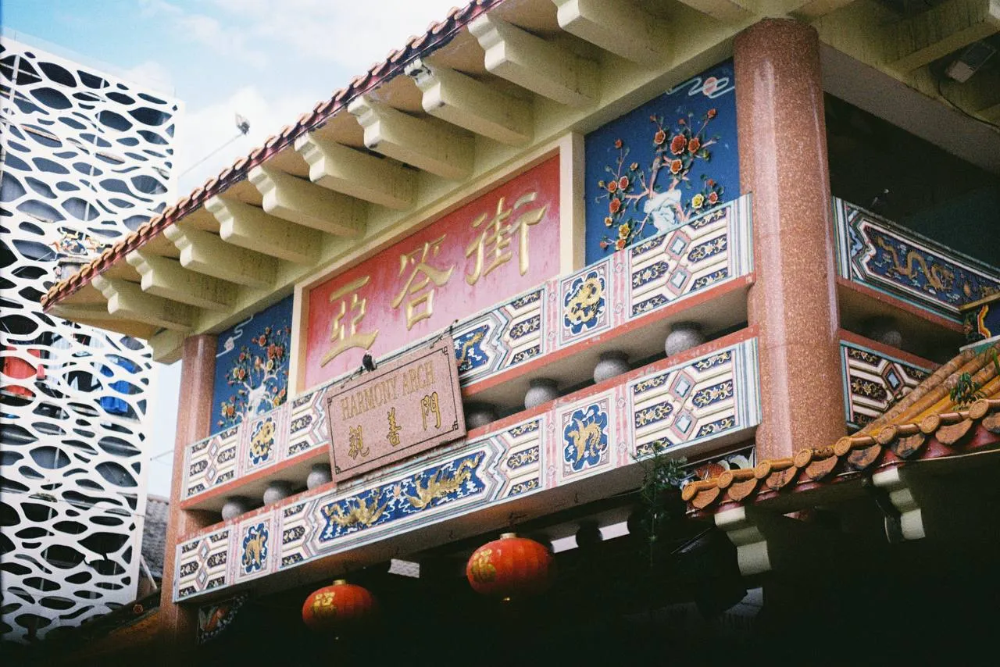
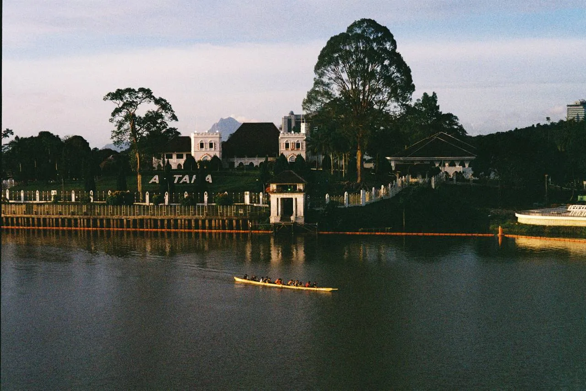
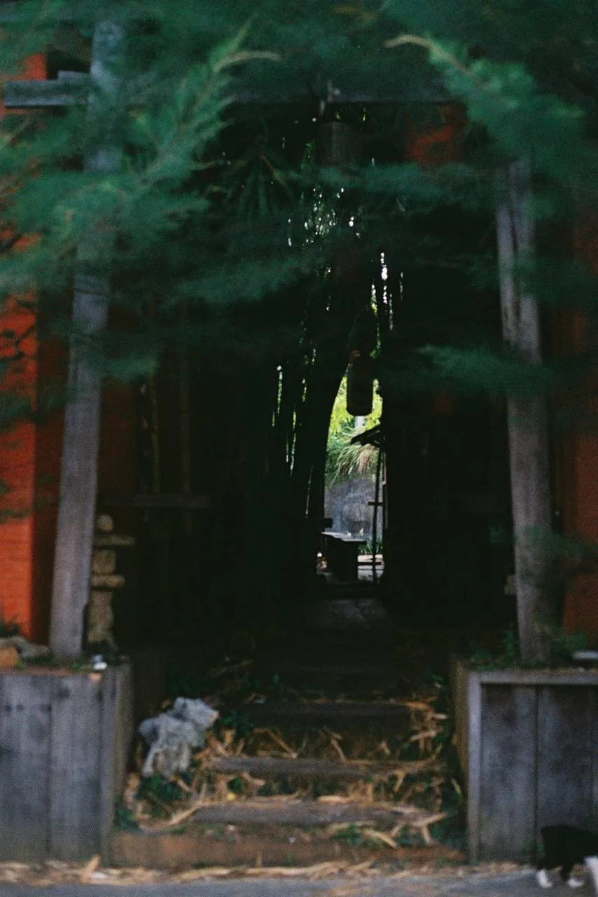
Get In Touch
I'm always open to discussing new projects, creative ideas, or opportunities to be part of your vision.
Say HelloDesigned & Built by Zarif Haikal © 2024